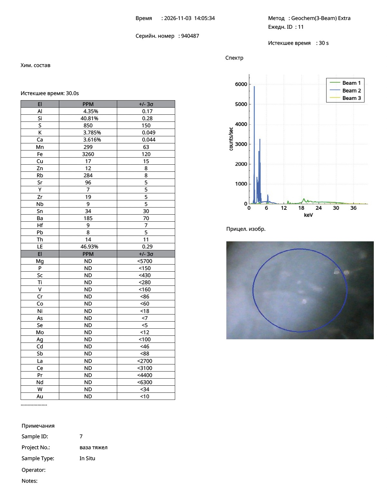
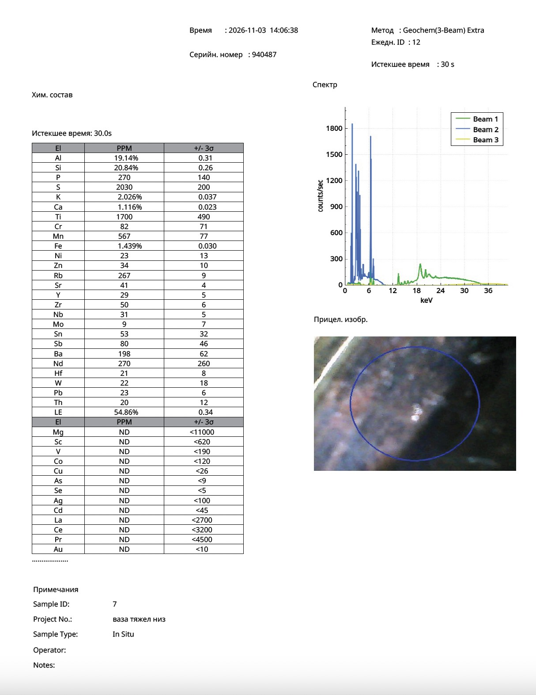

Research Article · Reference Object ro-song-004
X-Ray Fluorescence Analysis of a Large Guan-Type Vase with Crackle Glaze: Composition of the Glaze and the Black Ceramic Body in the Context of Southern Song Technology
Nona Dronova — Zenodo, 2026 — Chinese Ceramic Archaeometry · Southern Song Guan-Type Crackled Wares
Abstract
This study presents the results of portable X-ray fluorescence (pXRF) analysis of a large ceramic vase with crackle glaze belonging to the tradition of Guan ware (官窑) of the Southern Song dynasty (1127–1279 CE).
The analysis was carried out on two areas of the vessel: the glazed outer surface and an unglazed area of the foot, where the ceramic body is exposed.
The results reveal a pronounced chemical differentiation between the glaze and the body. The glazed surface is enriched in silicon (40.81 wt%), potassium (3.785 wt%) and calcium (3.616 wt%), whereas the ceramic body shows substantially higher concentrations of aluminium (19.14 wt%), iron (1.439 wt%) and titanium (1700 ppm).
Only trace amounts of lead were detected in both areas, confirming the use of a leadless high-temperature ceramic technology.
The compositional data indicate a technological system consisting of a silica-rich glaze applied over a dark iron-bearing ceramic body. This combination corresponds to the principal technological characteristics of Guan-type crackled ware of the Southern Song tradition.
Keywords: Guan ware; Southern Song dynasty; celadon; crackle glaze; black-bodied ceramics; X-ray fluorescence analysis; archaeometry; Chinese ceramics; high-temperature glaze technology.
1. Introduction
Guan wares (官窑) represent one of the most outstanding achievements of imperial ceramic production under the Southern Song dynasty.
Ceramics of this tradition are renowned for:
- thick bluish-grey glazes;
- extensive crackle networks;
- a jade-like surface;
- dark iron-bearing ceramic bodies;
- a strong visual contrast between the pale glaze and the dark foot.
Archaeometric studies of the kiln sites traditionally associated with Guan ware have demonstrated the technological importance of high-temperature, silica-rich glazes combined with iron-bearing ceramic materials.
The present study uses portable X-ray fluorescence spectroscopy to examine a large crackle-glazed vase in order to determine the chemical composition of the glaze and of the ceramic body, and to document the technological structure of the vessel.
2. Description of the Object
The object under study is a large monumental vase, approximately 40 cm high, with an elongated body and a tall neck.
The vessel has the following characteristics:
- bluish-grey glaze;
- extensive crackle of two different scales;
- a thick vitreous glaze layer;
- a glazed base with firing-support marks;
- an unglazed dark foot ring;
- an almost black exposed ceramic body.
Five round spur-support marks are visible on the base, arranged around the centre of the vessel.
The central part of the base remains fully glazed and is covered with a dense network of fine cracks.
The exposed ceramic body is dark grey to almost black, with localised brownish tones characteristic of a high-fired iron-bearing ceramic paste.
3. Materials and Methods
The analysis was carried out with a portable X-ray fluorescence spectrometer in Geochem (3-Beam) Extra mode.
| Parameter | Recorded value |
|---|---|
| Instrument serial number | 940487 |
| Analytical mode | Geochem (3-Beam) Extra |
| Date | 3 November 2026 |
| Acquisition time | 30 seconds per reading |
| Sample ID | 7 |
| Measurement No. 11 | Glazed outer surface (14:05:34; project vaza tyazhel) |
| Measurement No. 12 | Unglazed ceramic body exposed on the foot ring (14:06:38; project vaza tyazhel niz) |
| Measurement type | In situ, non-destructive |
Two measurement points were selected:
- Measurement No. 11 — glazed outer surface of the vessel.
- Measurement No. 12 — unglazed ceramic body visible on the foot ring.
Results are reported as elemental concentrations in weight per cent (wt%) and parts per million (ppm).
4. Results of the X-Ray Fluorescence Analysis
Table 1. Composition of the principal elements.
| Element | Glaze | Ceramic body |
|---|---|---|
| Silicon (Si) | 40.81 wt% | 20.84 wt% |
| Aluminium (Al) | 4.35 wt% | 19.14 wt% |
| Potassium (K) | 3.785 wt% | 2.026 wt% |
| Calcium (Ca) | 3.616 wt% | 1.116 wt% |
| Iron (Fe) | 3260 ppm | 14 390 ppm |
| Titanium (Ti) | <280 ppm | 1700 ppm |
| Manganese (Mn) | 299 ppm | 567 ppm |
| Rubidium (Rb) | 284 ppm | 267 ppm |
| Strontium (Sr) | 96 ppm | 41 ppm |
| Yttrium (Y) | 7 ppm | 29 ppm |
| Zirconium (Zr) | 19 ppm | 50 ppm |
| Niobium (Nb) | 9 ppm | 31 ppm |
| Barium (Ba) | 185 ppm | 198 ppm |
| Lead (Pb) | 8 ppm | 23 ppm |
The chemical contrast between the glaze and the ceramic body is particularly pronounced.
The most significant differences are observed in the concentrations of aluminium, iron and titanium.
5. Composition of the Glaze
The glaze is characterised by a high concentration of silicon:
Si = 40.81 wt%
together with significant amounts of potassium, calcium and strontium.
The elevated silicon content indicates a well-developed vitreous phase.
Potassium and calcium act as the principal fluxing agents in the glaze system.
The iron concentration in the glaze is limited to 3260 ppm, considerably lower than in the ceramic body.
This distribution of elements is characteristic of the high-temperature silicate glazes used in celadon production technologies.
6. Composition of the Ceramic Body
The ceramic body has a fundamentally different composition.
Principal components:
- Al = 19.14 wt%;
- Fe = 14 390 ppm;
- Ti = 1700 ppm.
The iron concentration in the body is more than four times that in the glaze.
This result corresponds closely to the dark colour observed on the exposed ceramic fabric.
The elevated aluminium content indicates the use of highly refractory aluminosilicate raw materials suitable for high-temperature firing.
7. Formation of the Black Ceramic Body
The analytical results reveal a characteristic concentration of iron- and titanium-bearing components in the ceramic fabric.
The body is enriched in:
- iron;
- titanium;
- manganese;
- aluminium.
This elemental association corresponds to the technological characteristics of the dark-coloured high-fired ceramics traditionally associated with crackled wares of the Southern Song period.
The iron concentration corresponds to approximately 2.06 wt% Fe₂O₃ equivalent.
The titanium concentration corresponds to approximately 0.284 wt% TiO₂ equivalent.
The combination of iron and titanium contributes substantially to the dark colour of the ceramic body observed on the vase.
8. Distribution of Trace Elements
Particular archaeometric significance is attached to rubidium, zirconium, yttrium, niobium and strontium.
Table 2. Trace-element concentrations.
| Element | Glaze | Ceramic body |
|---|---|---|
| Rubidium (Rb) | 284 ppm | 267 ppm |
| Strontium (Sr) | 96 ppm | 41 ppm |
| Zirconium (Zr) | 19 ppm | 50 ppm |
| Yttrium (Y) | 7 ppm | 29 ppm |
| Niobium (Nb) | 9 ppm | 31 ppm |
The ceramic body shows a marked enrichment in yttrium, zirconium and niobium.
These elements are widely recognised as useful geochemical indicators in archaeometric studies of the provenance of Chinese ceramics.
9. Crackle Formation and Firing Technology
The vase has a complex crackle structure consisting of both large and fine crackle networks.
Large cracks predominate on the outer surface, whereas a much finer crack network is present on the base.
This distribution reflects differences in glaze thickness and in the thermal stresses arising during cooling after firing.
The combination of:
- a thick glaze layer;
- a silica-rich vitreous phase;
- an iron-bearing ceramic body;
- extremely low lead concentrations
represents a characteristic high-temperature firing technology for crackle-glazed ceramics.
10. Archaeometric Interpretation
The analytical results confirm the presence of two technologically distinct materials:
- A silica-rich potassium–calcium glaze.
- A dark iron-bearing aluminosilicate ceramic body.
This combination represents one of the defining technological characteristics of Guan-type crackled ware.
Particularly important features include:
- the fourfold enrichment of iron in the ceramic body;
- the pronounced difference in titanium content between glaze and body;
- the elevated aluminium concentration in the ceramic fabric;
- a leadless glaze technology;
- extensive crackle;
- a dark exposed foot ring.
Taken together, these characteristics define a coherent technological system associated with the high-fired crackled ceramics of the Southern Song tradition.
11. Conclusions
Portable X-ray fluorescence analysis of the large crackle-glazed vase established the following technological characteristics:
- The glaze is enriched in silicon (40.81 wt%), potassium (3.785 wt%) and calcium (3.616 wt%).
- The ceramic body contains elevated concentrations of aluminium (19.14 wt%), iron (1.439 wt%) and titanium (1700 ppm).
- The iron concentration in the ceramic body is more than four times that in the glaze.
- Lead is present only in trace amounts (8–23 ppm), confirming a leadless high-temperature firing technology.
The overall distribution of major and trace elements demonstrates a deliberate combination of a silica-rich crackle glaze and a dark iron-bearing ceramic body.
Original pXRF Protocols
Portable XRF analyser, serial no. 940487 — 3 November 2026

Fig. 1. Measurement No. 11 — glazed outer surface (element table, spectrum, aiming image). Click to open full size.

Fig. 2. Measurement No. 12 — unglazed ceramic body on the foot ring. Click to open full size.
Related Publications on This Object
Dronova, N. (2025). Reconstruction of Dual-Crackle Glaze Technology in Southern Song Ge Yao Ware: A Case Study of a Large Monochrome Vase. Zenodo. https://doi.org/10.5281/zenodo.16650073
Dronova, N. (2025). Bottle Vase with Dense Crackle Pattern. Southern Song (1127–1279). Zenodo. https://doi.org/10.5281/zenodo.17073999
Dronova, N. (2026). Gemological Optical Microscopy and Visual Diagnostics of a Southern Song Bottle Vase with Dense Crackle Glaze Attributed to the Guan/Ge-Type Official Kiln Tradition, Jiangnan (1127–1279 CE). Zenodo. https://doi.org/10.5281/zenodo.20788310
Suggested Citation
Dronova, N. (2026). X-Ray Fluorescence Analysis of a Large Guan-Type Vase with Crackle Glaze: Composition of the Glaze and the Black Ceramic Body in the Context of Southern Song Technology. Zenodo. https://doi.org/10.5281/zenodo.23957897